Ampere Skylark 微架构评测¶
背景¶
Ampere eMAG 采用的是 Ampere Skylark 微架构，虽然是 2018 年的处理器了，但也顺带评测一下。其前身是 AppliedMicro 的 X-Gene 3 微架构，用在 Ampere eMAG 芯片上，用的是 TSMC 16nm FinFET+ 工艺。
官方信息¶
只找到了 X-Gene 2，即 Skylark 更早一代的信息：AppliedMicro X-Gene2
前端¶
取指带宽¶
为了测试实际的 Fetch 宽度，参考 如何测量真正的取指带宽（I-fetch width） - JamesAslan 构造了测试，实验结果如下：
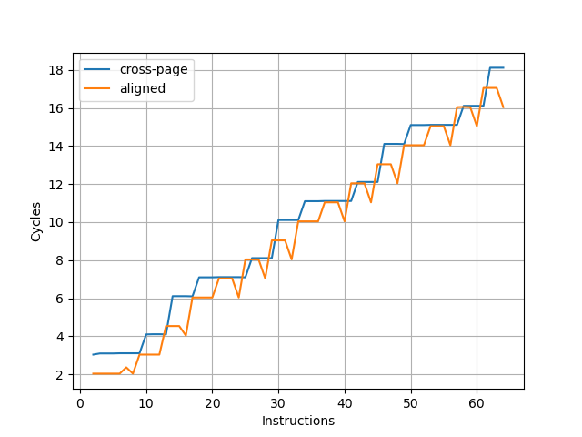
可见取指带宽是每周期四条指令，并且很多时候并不能打满。
L1 ICache¶
为了测试 L1 ICache 容量，构造一个具有巨大指令 footprint 的循环，由大量的 nop 和最后的分支指令组成。观察在不同 footprint 大小下的 IPC：
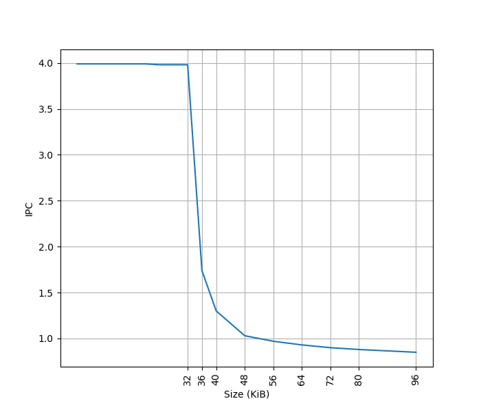
可以看到 footprint 在 32 KB 之前时可以达到 4 IPC，这对应了 32KB 的 L1 ICache。
BTB¶
构造大量的无条件分支指令（B 指令），BTB 需要记录这些指令的目的地址，那么如果分支数量超过了 BTB 的容量，性能会出现明显下降。当把大量 B 指令紧密放置，也就是每 4 字节一条 B 指令时：
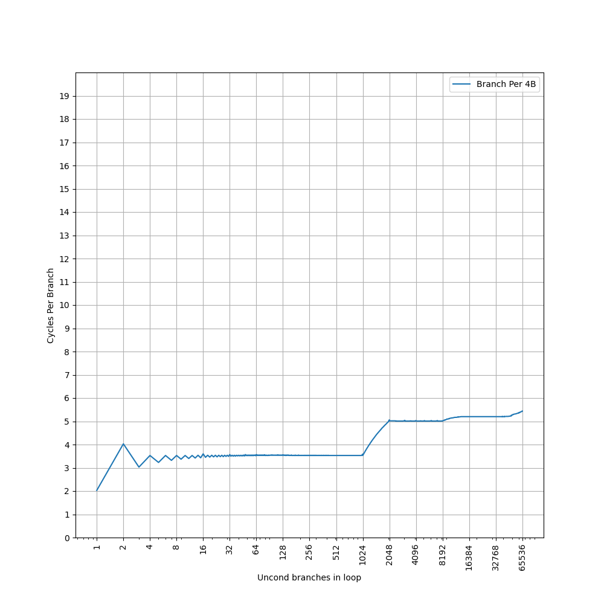
可见 Skylark 的 BTB 对分支紧密放置的情况支持不是很好，在 1024 个分支之内的 CPI 达到了 3.5，这一点在较早的处理器上比较常见，比如 Neoverse N1 的 BTB，不过稍微新一些的处理器，随着设计的改进，类似的情况比较少见了。之后到 8192 个分支，CPI 达到了 5。接着降低分支指令的密度，在 B 指令之间插入 NOP 指令，使得每 8 个字节有一条 B 指令，得到如下结果：
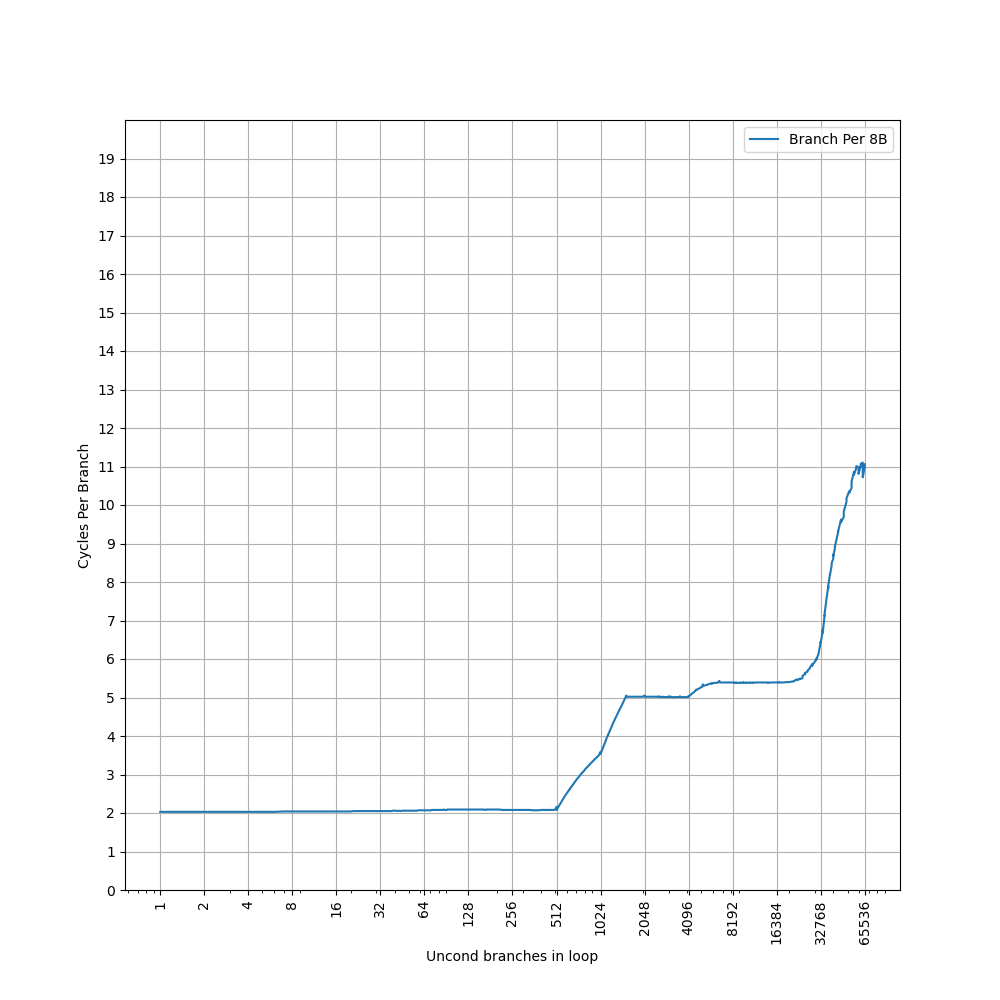
这个图像就比较正常了，CPI=2 持续到了 512 个分支，对应上面 1024 个分支的拐点前移，之后 CPI=5 的拐点在 4096，对应了上面 8192 的拐点。考虑到它的 L1 ICache 是 32 KB，正好对应 8192 的拐点，可以认为 Skylark 的 BTB 是：
- 1024-entry, 2 cycle latency 的 L1 BTB
- 32 KB 的 L1 ICache 作为 L2 BTB
L1 ITLB¶
构造一系列的 B 指令，使得 B 指令分布在不同的 page 上，使得 ITLB 成为瓶颈：
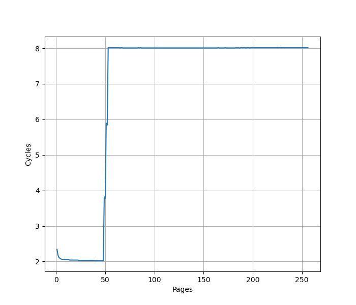
在 48 个页时，CPI 从 2 提升到了 8，意味着 L1 ITLB 容量是 48。
Return Stack¶
构造不同深度的调用链，测试每次调用花费的平均时间，得到下面的图：
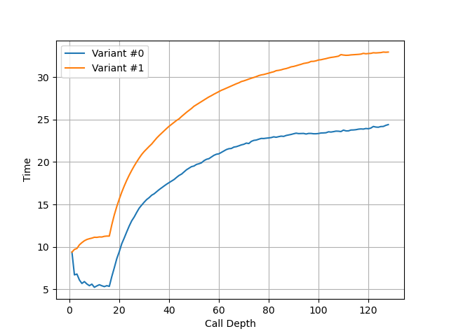
可以看到调用链深度超过 16 时性能突然变差，因此 Skylark 的 Return Stack 深度为 16。
后端¶
Load Store Unit + L1 DCache¶
L1 DCache 容量¶
构造不同大小 footprint 的 pointer chasing 链，测试不同 footprint 下每条 load 指令耗费的时间：
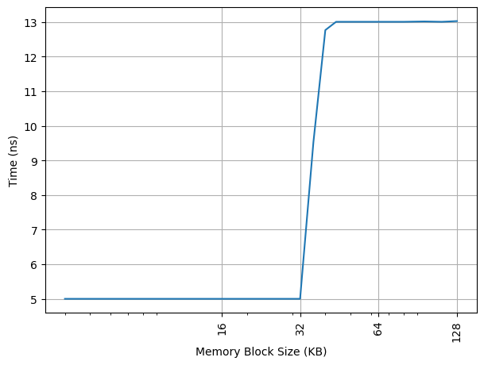
可以看到 32KB 出现了拐点，对应的就是 32KB 的 L1 DCache 容量，和官方信息一致，访存延迟从 5 cycle 增加到 13 cycle。
L1 DTLB 容量¶
用类似的方法测试 L1 DTLB 容量，只不过这次 pointer chasing 链的指针分布在不同的 page 上，使得 DTLB 成为瓶颈：
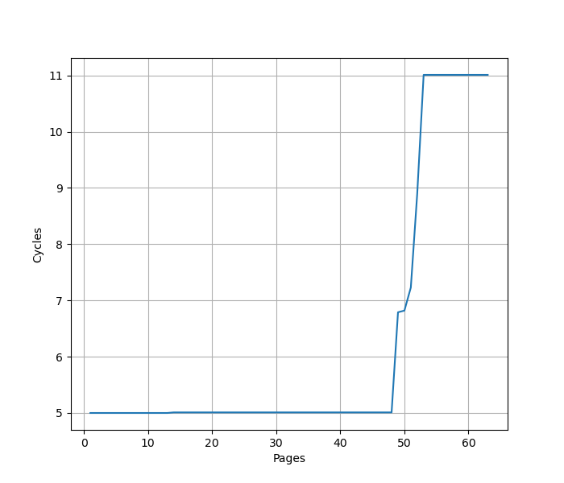
从 48 个页开始性能下降，认为 Skylark 的 L1 DTLB 有 48 项，访存延迟从 5 cycle 增加到 11 cycle。
Load/Store 带宽¶
针对 Load Store 带宽，实测 Skylark 每个周期可以完成：
- 1x 64b Load
- 1x 64b Load + 1x 64b Store
- 1x 64b Store
如果把每条指令的访存位宽从 64b 改成 128b，读写带宽不变，指令吞吐减半。也就是说最大的读带宽是 8B/cyc，最大的写带宽是 8B/cyc，可以同时达到。
Store to Load Forwarding¶
经过实际测试，Skylark 上如下的情况可以成功转发，对地址 x 的 Store 转发到对地址 y 的 Load 成功时 y-x 的取值范围：
| Store\Load | 8b Load | 16b Load | 32b Load | 64b Load |
|---|---|---|---|---|
| 8b Store | {0} | {} | {} | {} |
| 16b Store | [0,1] | {0} | {} | {} |
| 32b Store | [0,3] | [0,2] | {0} | {} |
| 64b Store | [0,7] | [0,6] | [0,4] | {0} |
转发的性能分以下几种情况：
- 满足上表中情况，即 Store 完全包括了 Load，则可以成功转发，4.5 Cycle，支持跨 64B 缓存行边界
- 特别地，如果 Load 跨越了对齐的 8B 边界，则延迟提高到 12 Cycle
- 特别地，如果 Store 没有完全包含 Load，但在某个对齐的 8B 块内，Store 完全包含了 Load，则延迟提高到 9 Cycle
- 否则，转发失败，27 Cycle
从这个现象，大概可以猜到，Skylark 是以 4B 为粒度，检查 Store 和 Load 的覆盖情况，如果 Store 可以完全覆盖 Load，就进行转发。
特别地，即使访问的范围没有重合，也就是不需要 Forwarding 的情况，如果 Load 和 Store 在同一个对齐的 4B 块内，或者 Store 跨越了对齐的 8B 边界，也会多一个周期。
一个 Load 需要转发两个、四个甚至八个 Store 的数据时，不能转发。
小结：Skylark 的 Store to Load Forwarding：
- 1 ld + 1 st: 要求 Store 覆盖 Load
- 1 ld + 2/4/8 st: 不支持
Forwarding 能力和 AMD Zen 5 比较类似。
Load to use latency¶
实测 Skylark 在下列的场景下可以达到 5 cycle:
ldr x0, [x0]: load 结果转发到基地址，无偏移ldr x0, [x0, 8]：load 结果转发到基地址，有立即数偏移ldr x0, [x0, x1]：load 结果转发到基地址，有寄存器偏移ldr x0, [sp, x0, lsl #3]：load 结果转发到 indexldp x0, x1, [x0]：load pair 的第一个目的寄存器转发到基地址，无偏移- load 的目的寄存器作为 alu 的源寄存器（下称 load to alu latency）
下列情况需要 6 cycle：
ldp x1, x0, [x0]：load pair 的第二个目的寄存器转发到基地址，无偏移- 访存跨越 64B 边界
Virtual Address UTag/Way-Predictor¶
Linear Address UTag/Way-Predictor 是 AMD 的叫法，但使用相同的测试方法，也可以在 Ampere Skylark 上观察到类似的现象，猜想它也用了类似的基于虚拟地址的 UTag/Way Predictor 方案，并测出来它的 UTag 也有 12 bit：
- VA[12] xor VA[24] xor VA[36]
- VA[13] xor VA[25] xor VA[37]
- VA[14] xor VA[26] xor VA[38]
- VA[15] xor VA[27] xor VA[39]
- VA[16] xor VA[28] xor VA[40]
- VA[17] xor VA[29] xor VA[41]
- VA[18] xor VA[30] xor VA[43]
- VA[19] xor VA[31] xor VA[44]
- VA[20] xor VA[32]
- VA[21] xor VA[33] xor VA[46]
- VA[22] xor VA[34]
- VA[23] xor VA[35]
执行单元¶
想要测试有多少个执行单元，每个执行单元可以运行哪些指令，首先要测试各类指令在无依赖情况下的 IPC，通过 IPC 来推断有多少个能够执行这类指令的执行单元；但由于一个执行单元可能可以执行多类指令，于是进一步需要观察在混合不同类的指令时的 IPC，从而推断出完整的结果。测试如下各类指令的延迟和每周期吞吐：
| 指令 | 延迟 | 吞吐 |
|---|---|---|
| asimd int add | 3 | 0.5 |
| asimd aesd/aese | 5 | 0.25 |
| asimd aesimc/aesmc | 2 | 0.5 |
| asimd fabs | 2 | 0.5 |
| asimd fadd | 5/6 | 0.5 |
| asimd fdiv 64b | 22 | 1/lat |
| asimd fdiv 32b | 22 | 1/lat |
| asimd fmax | 3 | 0.5 |
| asimd fmin | 3 | 0.5 |
| asimd fmla | 6 | 0.5 |
| asimd fmul | 6 | 0.5 |
| asimd fneg | 2 | 0.5 |
| asimd frecpe | 3 | 0.5 |
| asimd frsqrte | 5 | 0.5 |
| asimd fsqrt 64b | 76 | 1/lat |
| asimd fsqrt 32b | 48 | 1/lat |
| fp fabs | 2 | 1 |
| fp fadd | 5/6 | 1 |
| fp fdiv 64b | 17 | 1/11 |
| fp fdiv 32b | 17 | 1/11 |
| fp fmax | 3 | 1 |
| fp fmin | 3 | 1 |
| fp fmul | 6 | 1 |
| fp fneg | 2 | 1 |
| fp frecpe | 3 | 1 |
| fp frecpx | 3 | 1 |
| fp frsqrte | 5 | 1 |
| fp fsqrt 64b | 44 | 1/38 |
| fp fsqrt 32b | 28 | 1/22 |
| int add | 1 | 2 |
| int addi | 1 | 2 |
| int bfm | 2 | 1 |
| int crc | 2 | 1 |
| int csel | 1 | 2 |
| int madd (addend) | 2 | 0.5 |
| int madd (others) | 6 | 0.5 |
| int mrs nzcv | - | 1 |
| int mul | 5 | 0.5 |
| int nop | - | 4 |
| int sbfm | 2 | 1 |
| int sdiv | 7 | 1/lat |
| int smull | 4 | 1 |
| int ubfm | 2 | 1 |
| int udiv | 7 | 1/lat |
| not taken branch | - | 1 |
| taken branch | - | 0.3 |
可见它的执行单元不多，只有 2x ALU，1x Branch，1x Load，1x Store，1x FP，其中 ASIMD 拆成两个 64b 的部分分别计算，即 FP 的 datapath 只有 64b 宽。
Reorder Buffer¶
用 NOP 指令测试 Skylark 的 ROB 大小：
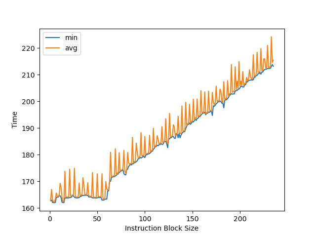
可以看到拐点是 60 条指令。
L2 Cache¶
构造不同大小 footprint 的 pointer chasing 链，测试不同 footprint 下每条 load 指令耗费的时间，这次把容量扩充到 L2 Cache 的范围：
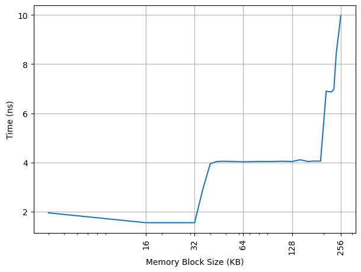
可以看到 192KB 出现了拐点，对应 13 Cycle。lscpu -C 报告的实际容量为 256KB，意味着对单个核心的数据占用的 L2 Cache 容量有限制。
L2 TLB¶
沿用 L1 DTLB 的测试，继续扩大测试的范围，找到新的拐点：
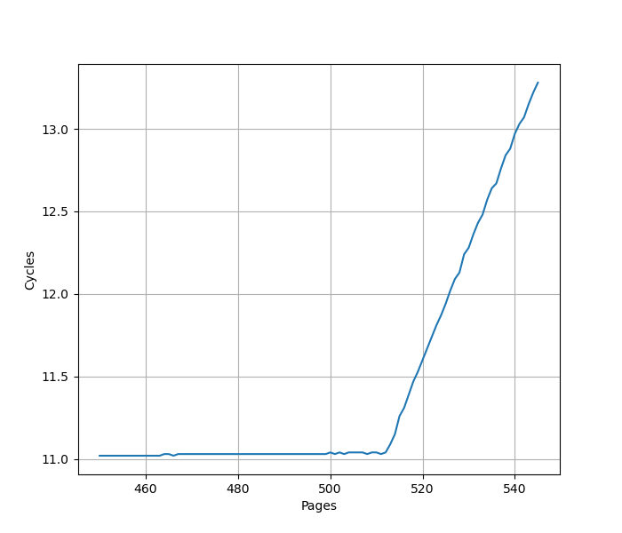
意味着 L2 TLB 容量是 512。
总结¶
Skylark 是比较早期的 ARM server core，配置如下：
- 4-wide
- 32 KB L1 ICache/DCache
- 1024-entry BTB
- 48-entry L1 ITLB/DTLB
- 16-entry RAS
- 60-entry ROB
- 执行单元只有 2 ALU + 1 Branch + 1 Load + 1 Store + 1 FP